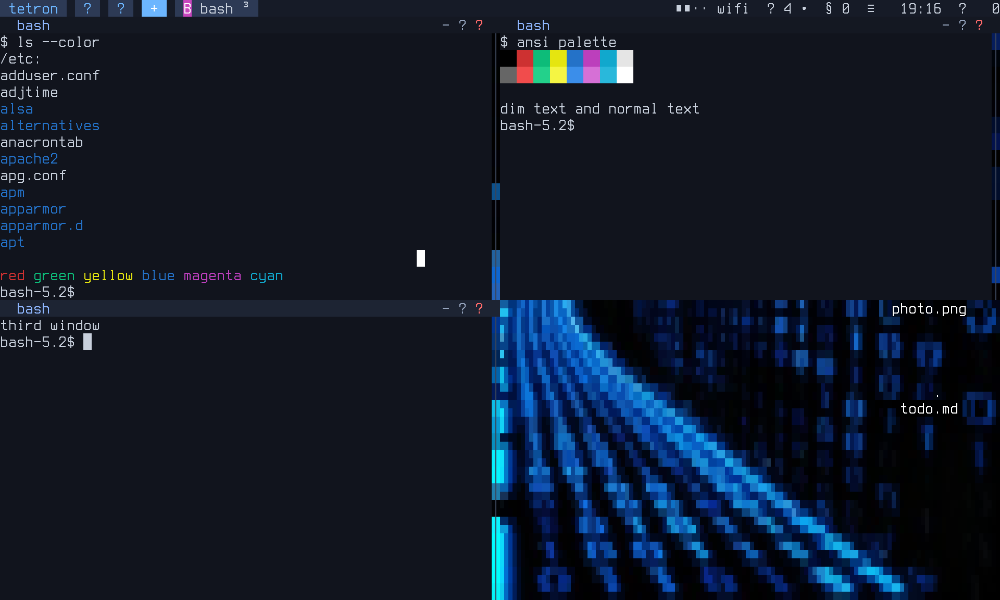
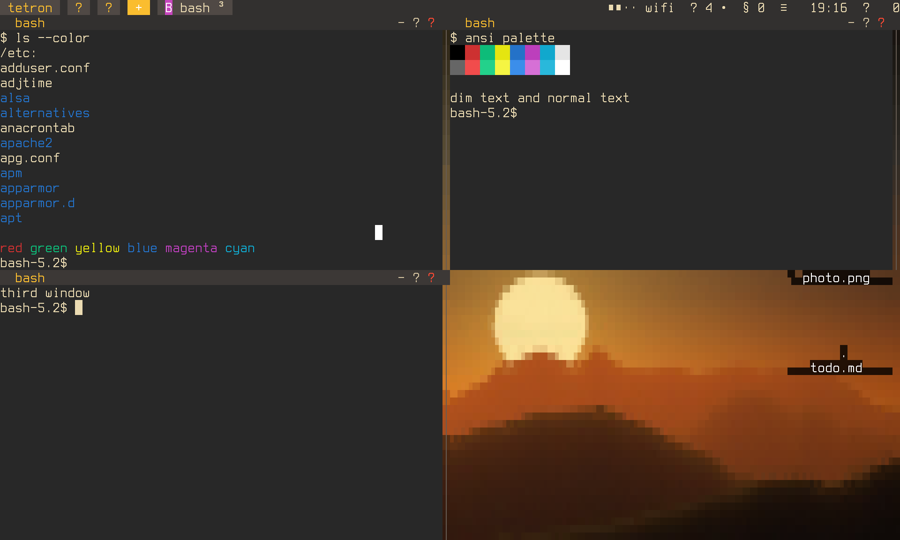
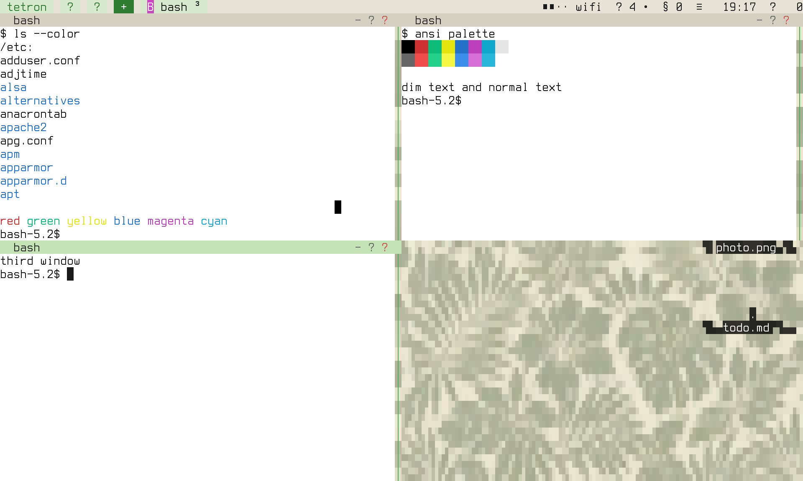
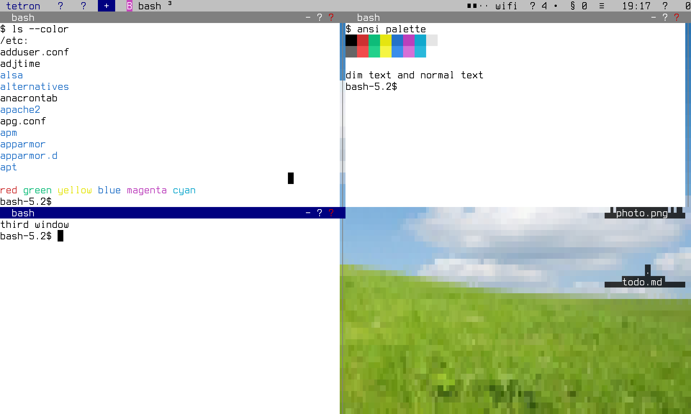
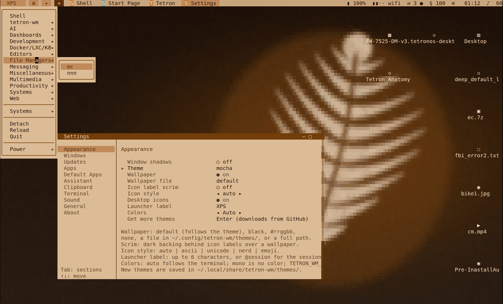
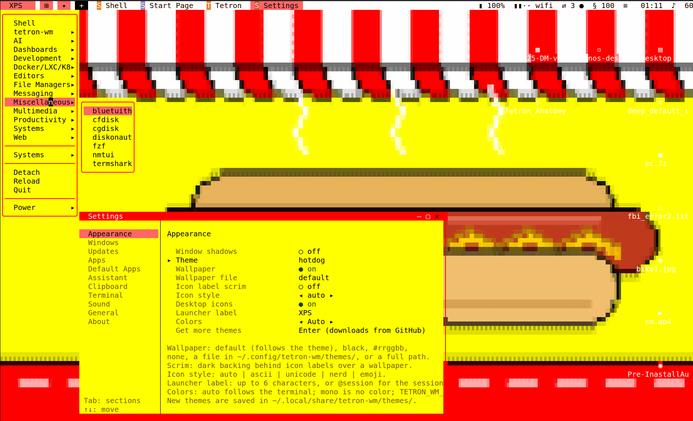
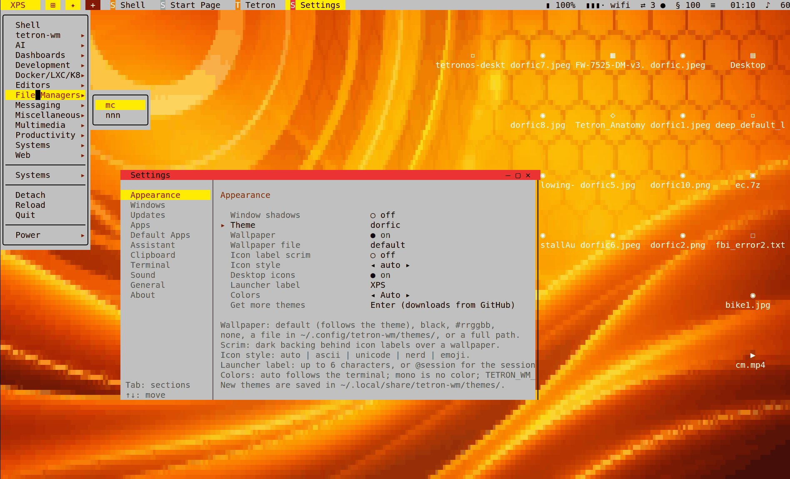
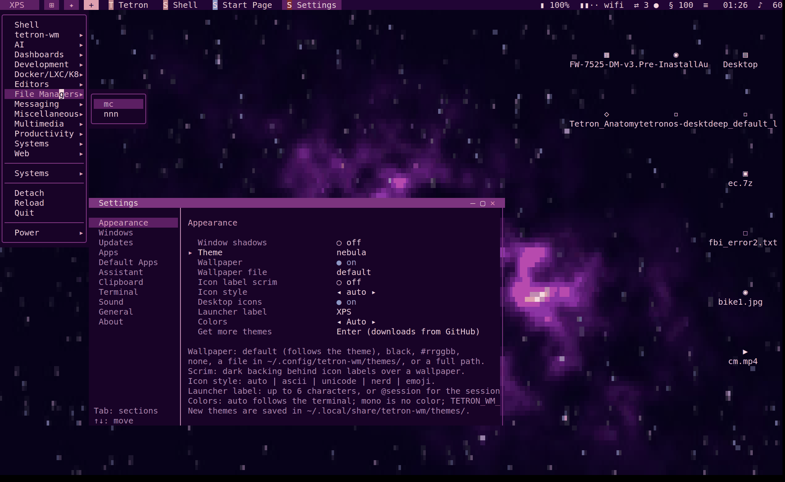
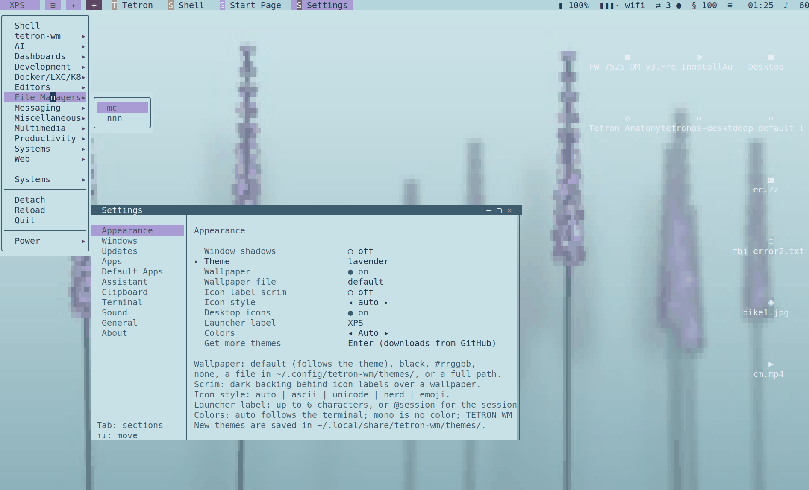

Themes
Every theme is a small file: colours, glyph style and its own wallpaper. Four are built in. The rest download from inside the app: Settings > Appearance > Get more themes, or the suite installer. Click a screenshot for full size.

Deep navy windows, a sky-blue accent. The default.
tetron-wm theme midnight
Warm retro dark: brown-greys, cream text, gold accent.
tetron-wm theme gruvbox
Light and calm: white windows, a soft green focused title.
tetron-wm theme pastoral
The early-90s desktop: teal wallpaper, navy title bars, white windows.
tetron-wm theme windows
Coffee browns: tan windows, deep brown title bar, latte-art wallpaper.
tetron-wm theme mocha
The famously loud red and yellow scheme, made readable. Pixel-art hotdog stand.
tetron-wm theme hotdog
Orange, silver, yellow and red: silver windows, red title, yellow selection.
tetron-wm theme dorfic
Deep space purples: violet-black windows, orchid accent, a wispy nebula.
tetron-wm theme nebula
Lavender in mist: pale aqua windows, dark teal title, lavender selection.
tetron-wm theme lavenderAlso downloadable, no screenshot here yet: nord, dracula, dawn, newmoon and contrast (white on black, for low vision). Make your own: tetron-wm theme --dump midnight writes an editable copy, then see the theming guide.